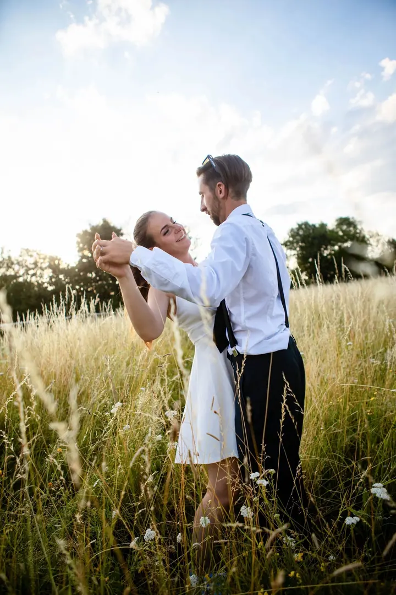
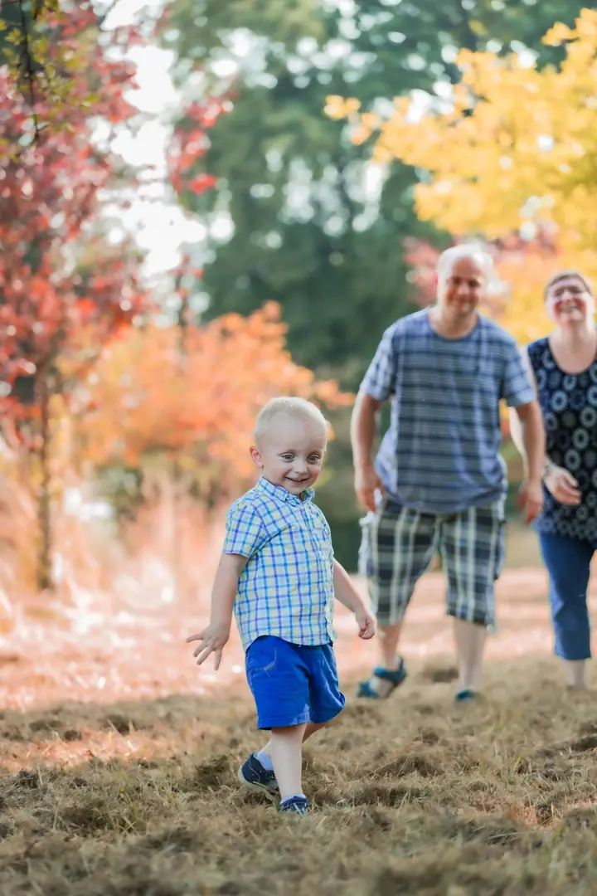
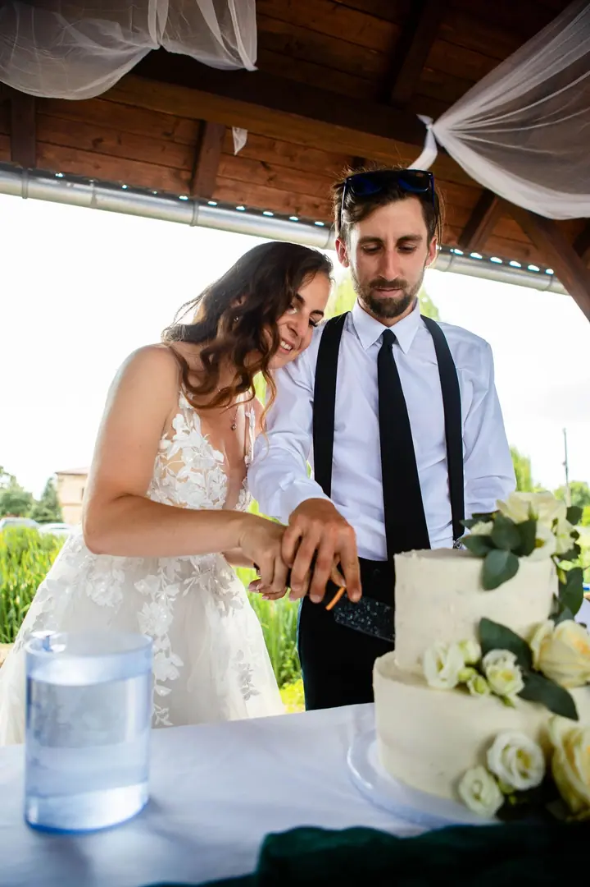
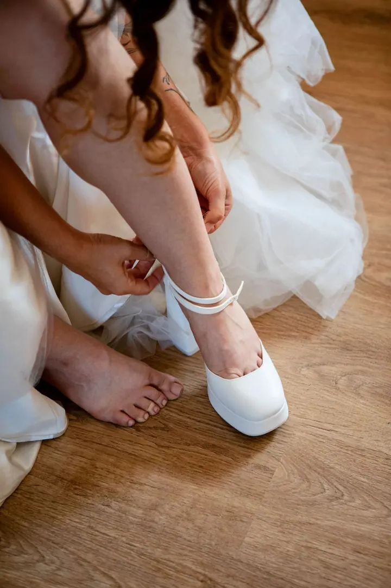
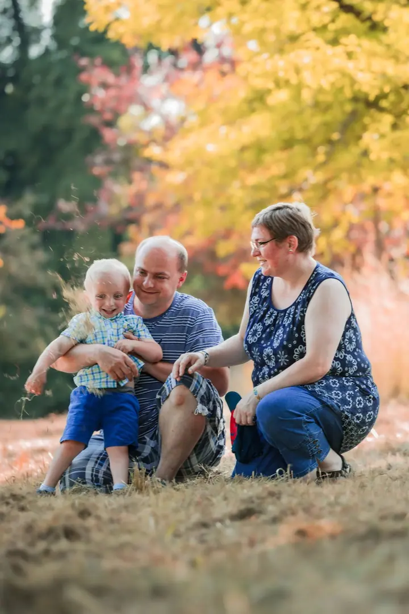

01 / 04
Svatební fotografie
Fotím celý svatební den od příprav po večerní oslavu. Soustředím se na přirozené emoce, opravdové okamžiky a atmosféru, kterou si budete chtít připomínat.
Zeptat se na termín→




Svatby a rodiny tak, jak je prožíváte
Zeptat se na termín →(01) Ahoj
Jmenuji se Alexandr Janeček a jsem fotograf z Jičína. Fotím svatby , rodiny a páry, ale také koncerty a plesy. Nejvíc mě baví přirozené emoce a atmosféra celého dne .
(02) Co fotím
01 / 04
Fotím celý svatební den od příprav po večerní oslavu. Soustředím se na přirozené emoce, opravdové okamžiky a atmosféru, kterou si budete chtít připomínat.
Zeptat se na termín→02 / 04
Klidné focení venku, kde se děti můžou proběhnout a vy se nemusíte strojeně usmívat. Vzniknou fotky, na kterých se poznáte.
Zeptat se na termín→03 / 04
Portrétní a párové focení s osobním přístupem. Hledám polohy a místa, kde se budete cítit přirozeně.
Zeptat se na termín→Dále nabízím
Fotím koncerty, maturitní plesy, firemní akce a další důležité události. Zachytím atmosféru i lidi, kteří ji tvoří.
↗(04) Postup
Od první zprávy po hotovou galerii.
Krok 1 z 4
Napište nebo zavolejte, o jaké focení máte zájem a kdy. Ověřím, zda mám volný termín.
Krok 2 z 4
Probereme místo, program a vaše představy, aby focení sedělo přesně vám.
Krok 3 z 4
Přijedu, kam potřebujete, a fotím nenápadně. Vy se můžete věnovat sobě a svým blízkým.
Krok 4 z 4
Snímky pečlivě vyberu a upravím a pošlu vám je v domluveném termínu.
Přirozené emoce a atmosféra celého dne
(05) Za objektivem
Jsem Alexandr Janeček, fotograf z Jičína. Specializuji se na svatební fotografii, rodinné, portrétní a párové focení, ale rád fotím i koncerty, maturitní plesy, firemní akce a další významné události.
Při focení se zaměřuji na přirozené emoce, autentické okamžiky a atmosféru celého dne. Nechci vás stavět do strnulých póz. Raději se přizpůsobím vám a nechám věci plynout, aby fotky vypadaly jako vy.
Působím hlavně v Jičíně, Hradci Králové, Mladé Boleslavi, Liberci a okolí. Za focením ale rád přijedu kamkoliv po České republice. Pokud hledáte fotografa s osobním přístupem, napište mi.
Alexandr
Alexandr Janeček · Svatební a rodinný fotograf
Nejčastěji v Jičíně, Hradci Králové, Mladé Boleslavi, Liberci a okolí. Za focením ale rád přijedu kamkoliv po České republice.
Ano, svatbu můžu fotit od příprav až po večerní oslavu. Rozsah si domluvíme podle vašeho programu.
Volně a bez stresu, nejlépe venku. Děti si můžou hrát a já mezitím zachytím, jak to u vás opravdu vypadá.
Ano, fotím koncerty, maturitní plesy, firemní akce i další události. Napište mi termín a místo a domluvíme se.
(07) Kontakt
Napište pár vět o tom, co si představujete, a termín, který se vám hodí.